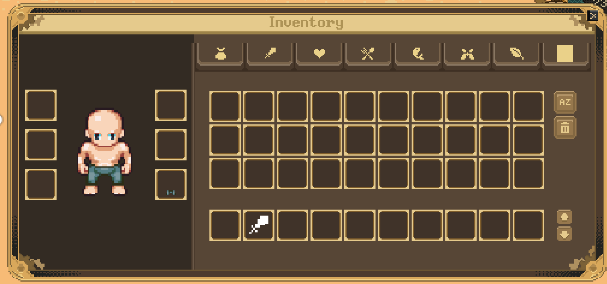
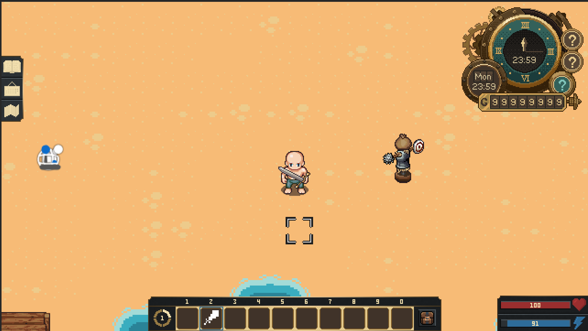

Greetings, Community!
Welcome to our latest development update! This month, we made significant progress in several areas, including the lighting system, item spawner, combat mechanics, and user interface. Read on for a deeper dive into our updates.
Combat System
This month, our primary focus was on refining the combat system. Weapon collision detection is handled with precision using Collider2D components, ensuring that hits are accurately registered during gameplay. Additionally, the AI enables enemy units to switch between various states (such as Idle, Roaming, Pursuing, Searching, Attacking, Retreating, Hit, Stunned, Blocking, and Death).
Highlights
- Enemy Types: Includes melee, ranged, and magical foes, each with unique strategies.
- Weapons: Weapons can be imbued with unique attributes like fire, ice, or lightning. Current examples include daggers, swords, flails, maces, bows, and crossbows.
- Hitbox System: Weapon attacks create temporary colliders that define precise hit zones. The hit detection is calculated within the animation itself, providing a realistic combat feel.
- Drops and Rewards: Defeated enemies drop rewards based on probabilities.
Character Customization
A dynamic clothing system has been introduced, enabling players to modify their character's appearance and functionality. A custom script allows for the quick addition of new outfits, taking attributes like armor, resistance, and speed boosts into account.
Highlights
- Clothing Types: Includes gloves, helmets/hair, belts, body armor, pants, and shoes, giving players plenty of customization options.
- Body Types: Players can choose between different body types, such as male, female, muscular builds, or even children for story purposes. Skin tones can also be customized.
- UI: The clothing UI is integrated directly into the inventory, allowing for seamless outfit changes via drag-and-drop functionality.
-
Animation Integration: A script called
AnimationGeneratorallows for the creation of animations for outfits, weapons, and body types. Animations such as walking, fighting, or casting spells can be quickly created and swapped in real time.
Demonstration:
The first image showcases the inventory and character customization menu. On the left, you can see the character and their equipped items, while the right side displays the inventory. Players can equip or remove clothing via drag-and-drop, with immediate visual updates.
The second image illustrates an in-game example of the dynamic clothing system in action.
Prefab Spawner and Dynamic World Design
Another exciting advancement involves our Prefab Spawner system. As shown in the image, the spawner dynamically generates a game environment filled with resources like trees, rocks, and stumps. Object placement occurs randomly within defined areas to ensure a natural distribution. Each tree or rock represents a harvestable resource for players to collect.
Demonstration:
The image displays a collection of trees and rocks on a farmland area, representing a vibrant environment. Players can use these resources to gather materials and explore the world further. This system is also utilized in areas like beaches and mines.
Map Concept Design
We have developed a new map concept that includes five areas: Beach, City Center, Farm, Mountain, and Mine. The map design serves to create realistic interactions, such as NPC daily routines and dynamic environmental conditions, while also preparing for an internal demo version. The current design is primarily functional, but many unused assets will later enhance the map's visual details.
Lighting Enhancements
A key focus has been on the dynamic day-night cycle. Using the TimeManager script, smooth transitions between different times of day have been implemented, adjusting shadow behavior and light intensity dynamically. One highlight includes building shadows that realistically shift based on the sun's position.
Clock (UI)
Introducing our first completed UI element: the clock. This feature displays the time both analog and digitally. The bottom left circle shows the current date, while the colored ring and dynamic background represent the season.
- Spring: Falling pink petals within a pink-themed clock.
- Summer: Green leaves in a green-themed clock.
- Fall: Orange leaves in an orange-themed clock.
- Winter: White snowflakes in a blue-themed clock.
On the right side, the current weather and a forecast for upcoming weather conditions are displayed..
Additional Updates
A new multilingual font has been implemented to support a broader player base. Credit to LanaPixels.
Stay Tuned
That’s it for this update! In the future, we plan to dive deeper into the technical details on our YouTube channel and publish tutorials for all completed systems. Stay tuned to learn more about our development journey!
Which features do you like the most? Share your feedback with us and stay tuned for more updates!